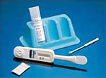

Управление по контролю за пищевыми продуктами и лекарственными средствами США (FDA) одобрило применение экспресс-теста для диагностики ВИЧ, в качестве материала для которого используется мазок со слизистой полости рта. В настоящее время тест получил одобрение лишь для определения антител к ВИЧ-1 в секрете полости рта.
В апреле 2004 г. Управление по контролю за пищевыми продуктами и лекарственными средствами США (FDA) одобрило использование экспресс-теста на ВИЧ, в качестве материала для которого используется мазок со слизистой полости рта. Тест позволяет получить скрининговый результат в течение 20 мин. с точностью результата до 99%. Методика уникальна в связи с тем, что материалом для всех ранее существовавших экспресс-тестов для определения ВИЧ являлась кровь.

Оригинальная версия теста, «OraQuick Rapid HIV-1/2 Antibody Test», производимая компанией OraSure Technologies Inc., была одобрена ранее для определения антител к ВИЧ в крови. В 2002 г. было разрешено его применение для выявления в крови антител к ВИЧ-1, а позже и к ВИЧ-2. В настоящее время тест получил одобрение лишь для выявления антител к ВИЧ-1 в секрете ротовой полости. Для скринингового обследования доноров крови тест еще не одобрен.
Технически тестирование крайне простое. Специальным приспособлением, содержащим абсорбент, делается мазок вдоль всей слизистой наружной поверхности верхней и нижней десен. Затем приспособление помещается в емкость с раствором. В течение 20 минут по появлению в окошечке приспособления двух красновато-фиолетовых полос можно судить о наличии антител к ВИЧ-1. Тест является скрининговым, и в случае положительного результата обязательно необходимо его подтверждение дополнительными обследованиями.
Внедрение теста сыграет немаловажную роль в улучшении общественного здоровья. По ориентировочным данным, в США четверть из около 900 000 людей, живущих с ВИЧ, не знают о своей инфицированности. Стандартная продолжительность обследования на ВИЧ составляет до 14 дней, и от 30 до 50% обследовавшихся на ВИЧ в амбулаторных условиях не возвращаются за результатом. Использование экспресс-теста позволит получить ответ в течение одного визита. Тест представляет также альтернативу для людей, которые боятся сдавать кровь. Благодаря этому тесту на ВИЧ будет обследоваться большее количество людей, в то же время медицинский персонал избегает риска, обусловленного контактом с кровью.
Launch of Oraquick® Advance Rapid HIV-1/2 Antibody Test